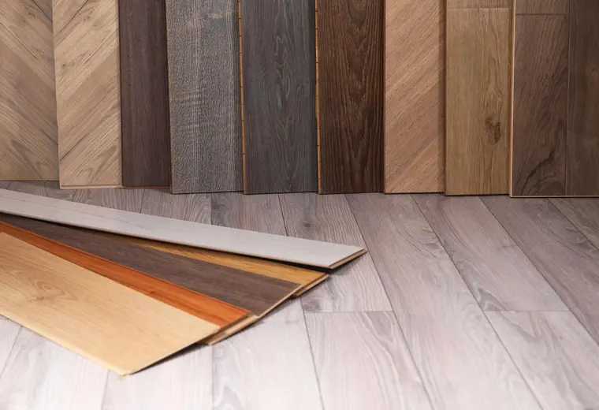

Staubarme Arbeit
Moderne Maschinen reduzieren Staub und halten die Baustelle besser kontrollierbar.
Parkett schleifen in München
Wir schleifen alte Parkettböden staubarm, bessern beschädigte Stellen aus und schützen die Oberfläche anschließend mit Öl, Lack oder Versiegelung.
Parkettrenovierung
Parkett muss oft nicht ersetzt werden. Mit dem passenden Schleifaufbau entfernen wir Gebrauchsspuren, Kratzer und matte Oberflächen.
Danach wählen wir gemeinsam die passende Behandlung: natürlich geölt, widerstandsfähig versiegelt oder gezielt aufgefrischt für die weitere Nutzung.

Oberfläche & Schutz
Wir stimmen Schleifgang, Reparaturen und Oberflächenbehandlung auf Holzart, Nutzung und gewünschte Optik ab.
Moderne Maschinen reduzieren Staub und halten die Baustelle besser kontrollierbar.
Lose Stellen, Fugen und kleine Schäden werden vor der Behandlung geprüft.
Wir erklären die Unterschiede und empfehlen die passende Oberfläche für Ihren Alltag.
Renovierung

Für matte Flächen mit leichten Spuren und bestehender Schutzschicht.

Für stärker genutzte Böden, Kratzer, Vergrauung und alte Versiegelungen.
Für Fugen, kleinere Schäden und eine klare Pflegeempfehlung nach Abschluss.
Ablauf
Wir begutachten Holz, Versiegelung, Fugen und mögliche Reparaturstellen.
Die Fläche wird abgestuft geschliffen und bei Bedarf lokal repariert.
Zum Schluss erhält der Boden den passenden Schutz und eine Pflegeempfehlung.
Beratung in München
Wir prüfen den Boden vor Ort und sagen klar, ob Schleifen, Auffrischen oder Reparatur sinnvoll ist.
FAQ
Das hängt von Parkettart und Nutzschicht ab. Massivparkett kann meist mehrfach geschliffen werden, Fertigparkett je nach Aufbau.
Es ist staubarm, aber nicht völlig staubfrei. Wir arbeiten mit Absaugung und sauberer Vorbereitung.
Öl wirkt natürlicher und lässt sich lokal pflegen, Lack ist widerstandsfähig und pflegeleicht. Die Empfehlung hängt von Nutzung und Optik ab.
Viele Spuren lassen sich verbessern. Tiefe Verfärbungen oder Wasserschäden prüfen wir vor Ort.
Je nach Oberfläche oft 24 bis 48 Stunden vorsichtig, volle Belastung nach Herstellerangabe.